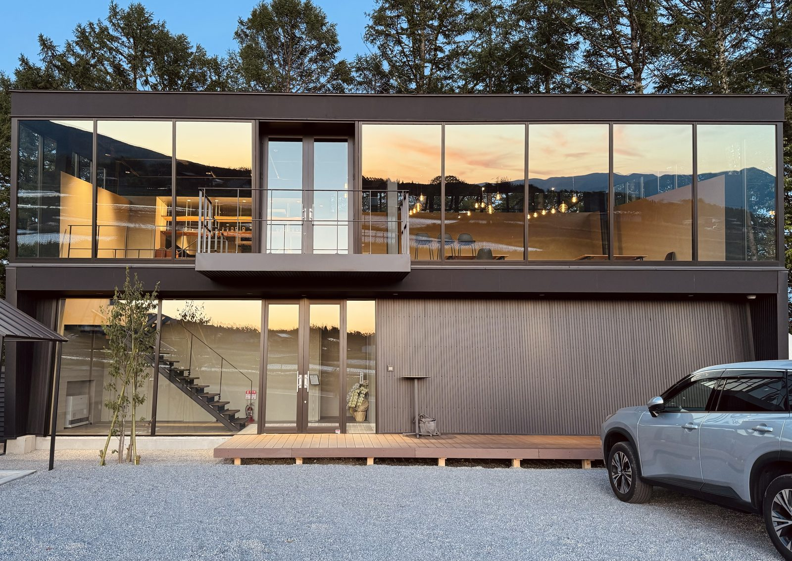
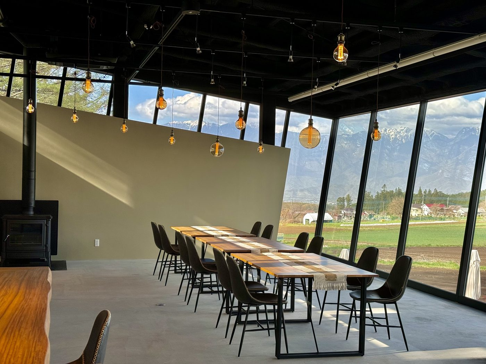
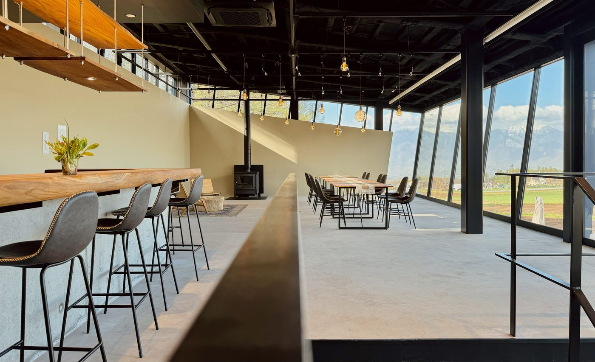
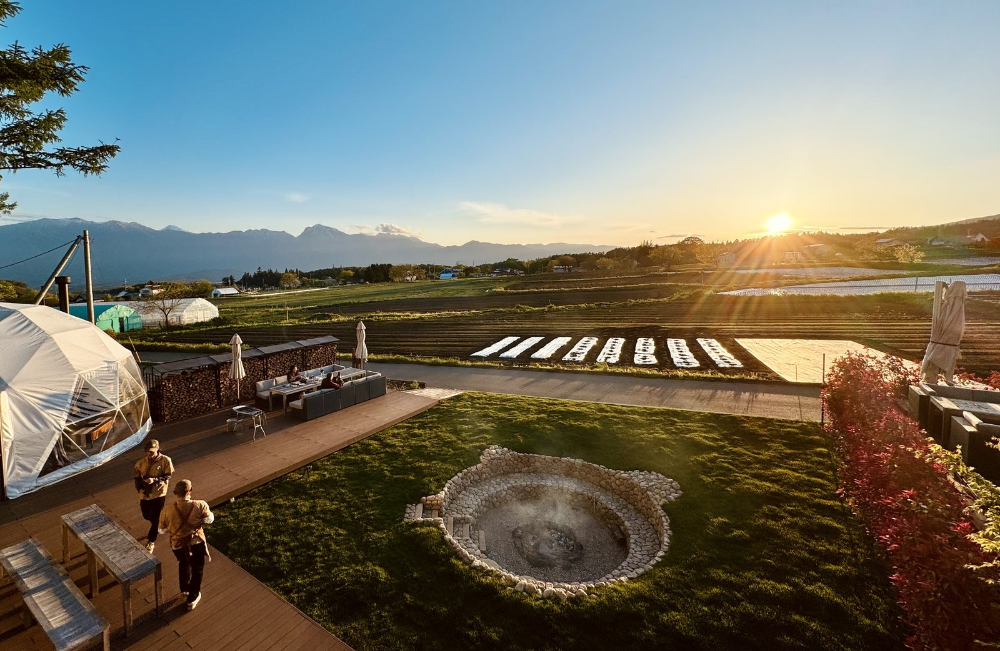
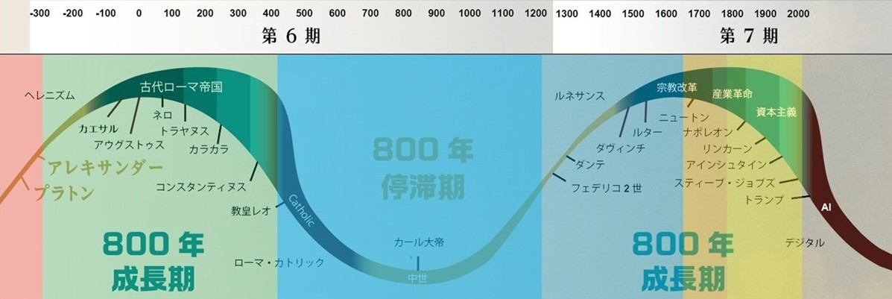
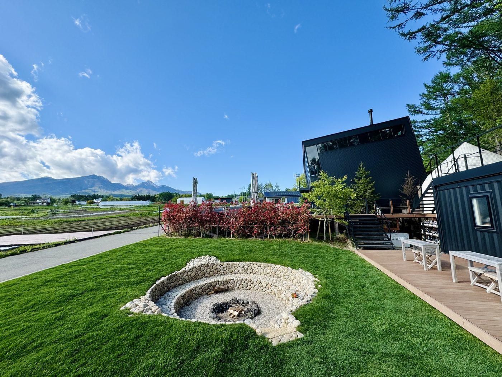
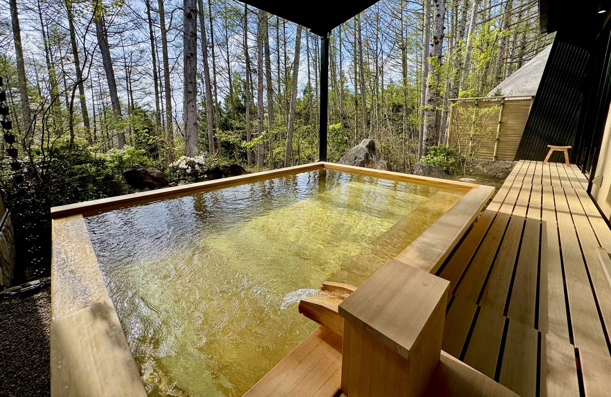

食があり、水があり、仲間がいる。
平時も有事も、本当の意味で豊かに生きられる場所を、
利他の精神を持つ人々と、ここから始めます。




800年ごとに文明の支配原理は変わってきた。金貨・宗教・紙幣、そして次はAIと人間の幸福。私たちが作ろうとしている村は、その転換点における小さくて本気の実証実験です。

山梨県北杜市・アイカフェファームを起点に、食・住・エネルギー・通貨のすべてが自立した村をつくります。管理社会とは別のルールで動く、人が本来の豊かさを取り戻せる場所です。
それは移住者だけのものではありません。緊急時に駆け込める拠点として、投資・社会貢献の対象として、あなたの関わり方で参加できる開かれた村です。
会員を募り、土地を取得し、施設を建てる。アイカフェファームを起点に、村の器を整える。
居住・移住プラン開始。独自通貨（ポイント）本格稼働。食・エネルギーの自給体制を整える。
JINEN MODEL の本格実装。AI・新通貨・HTPによる村の最適化。日本・世界への横展開。

本当の緊急時には、現金はインフレで価値を失います。しかし金・アンティークコインはインフレに強い実物資産。私たちはグループ会社の連携により、金・コインを直接、食・住・土地に変換できる仕組みを持っています。

関わり方は一つではありません。まず会員になることが村づくりへの参加の基本です。その上で、コイン・債券・施設購入など、あなたの意志と資金力に応じた入口があります。
| Bronze | Silver | Gold | Platinum | X | |
|---|---|---|---|---|---|
| 入会金（万円・税別） | 1 | 5 | 10 | 20 | 200 |
| 年会費（万円・税別） | 1 | 5 | 10 | 20 | 20 |
| 平常時サービス | |||||
| セミナー・情報提供 | ● | ● | ● | ● | ● |
| 施設割引 | 一部 | ● | ● | ● | ● |
| 運用・移住相談 | — | — | ● | ● | ● |
| 備蓄（半年分） | — | ● | ● | ● | ● |
| VIP野菜定期便 | — | — | — | ● | ● |
| 農地保有 | — | — | ● | ● | ● |
| 緊急時サービス | |||||
| アイカフェ利用権・食 | — | — | ● | ● | ● |
| 住居（テント・ドーム） | — | — | 空き次第 | ●テント用意済 | ●ドーム優先 |
| 金・コイン→食住変換 | — | — | ● | ● | ● |
債券・コイン購入者には購入額に応じたポイントを付与します。このポイントは村の産品・施設・サービスと交換できる「新しい通貨の実験」です。将来的には村内経済を動かす独自通貨へと育てていきます。
管理される側ではなく、設計する側へ。
利他の精神を持つ仲間と、新しい日本の形を始めましょう。
どの入口が自分に合うかわからない方、詳しく話を聞きたい方は 個別相談窓口 または 総合窓口（info@hadoushisan.com） からお気軽にどうぞ。